<meta charset="UTF-8">
<meta name="viewport" content="width=device-width, initial-scale=1.0">
<title>【サルでもできる】自分でドメインをとってブログを書き始める方法 | 生しょうが's blog</title>
<style>
    /* 1. 全体のトーン（メインページと統一） */
    body {
        margin: 0; padding: 0;
        font-family: serif;
        line-height: 1.8;
        color: #1a1a1a;
        background-color: #fcfcfc;
    }

    /* 2. 固定ヘッダー（トップへ戻るボタン） */
    header {
        position: fixed; top: 0; left: 0; width: 100%;
        background: #000; padding: 15px 0;
        text-align: center; z-index: 1000;
    }
    header a {
        color: #fff; text-decoration: none;
        font-weight: bold; letter-spacing: 0.1em;
        text-transform: uppercase;
    }

    /* 3. 記事本文エリア */
    main {
        max-width: 680px; /* 集中して読める幅 */
        margin: 100px auto 80px;
        padding: 0 25px;
    }

    /* 4. 記事のタイトルまわり */
    .post-header { margin-bottom: 40px; }
    .post-date { font-size: 0.9rem; color: #888; }
    h1 { font-size: 1.8rem; margin: 10px 0; line-height: 1.3; }
    .tag { font-size: 0.8rem; background: #eee; padding: 2px 8px; border-radius: 3px; }

    /* 5. 本文内の装飾（シンプルに） */
    p { margin-bottom: 1.5em; }
    h2 { 
        font-size: 1.4rem; border-left: 4px solid #000; 
        padding-left: 15px; margin-top: 50px; 
    }
    blockquote { 
        border-left: 2px solid #ccc; color: #666; 
        margin: 20px 0; padding-left: 20px; font-style: italic;
    }
    img { max-width: 100%; height: auto; margin: 20px 0; border: 1px solid #eee; }

    /* 6. 記事下のナビ */
    footer {
        border-top: 1px solid #eee;
        padding-top: 30px;
        text-align: center;
    }
    .back-to-top { text-decoration: none; color: #888; font-size: 0.9rem; }
    .back-to-top:hover { color: #000; }
</style>


<header>
    <a href="../index.html">生しょうが's blog</a></header>

<main>
    <article>
        <div class="post-header">
            <span class="post-date">2026.03.04</span>
            <span class="tag">How to</span> <h1>【サルでもできる】自分でドメインをとってブログを書き始める方法</h1>
        </div>

        <section class="post-content">
            <p>自分みたいに自分でドメインを取ってブログを書く方法だ。<br>必要なものさえあればサルでもできるだろう。</p>

            <h2>必要なもの</h2>
            <p>必要なものは以下の通りだ。</p>
<li>PC
</li><li>クレジットカード(バンドルカードなどプリペイド式でも可)
<p>たったこれだけだ。お金は言わずもがななのでいわない。<br>ちなみに宣伝ではないぞ。</p>
<h2>ドメインの取得</h2>
<p>まずはXserverのアカウントを作ろう。</p>
<a href="https://www.xdomain.ne.jp/" target="_blank" style="text-decoration: none; color: inherit;">
<div style="max-width: 500px; border: 1px solid #ddd; border-radius: 8px; overflow: hidden; background: #fff; box-shadow: 0 4px 6px rgba(0,0,0,0.1); font-family: sans-serif; margin: 20px 0;">
    
    
    <div style="padding: 15px;">
        <h3 style="margin: 0 0 5px 0; font-size: 1.1rem; border: none; padding: 0;">Xserver Domain</h3>
        <p style="margin: 0; font-size: 0.85rem; color: #007bff; text-decoration: underline;">https://www.xdomain.ne.jp/</p>
    </div>
</div>
</a>
<p>

みんなはドメインを取るならお名前ドットコムの方がいいと思うだろう。<br>だがお名前ドットコムではプリペイド式のカード(バンドルカードなど)が使えない。<br>普通のクレジットカードを持っているならお名前ドットコムのほうがいいだろう。<br>自分はXserver Domainでドメインを取ったのでXserverで話を進めよう。</p>
<div style="text-align: center; margin: 30px 0;">
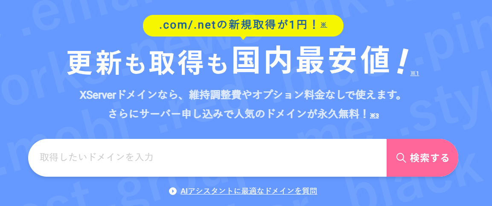
<p style="font-size: 0.8rem; color: #888; margin-top: 10px;">▲ ここに取得したいドメインを入力しよう</p>
</div>
<p>この検索ボックスに自分の取りたいドメインを入力しよう。<br>空きがあれば取得できるぞ。<br>だが注意点としてすでに使われているドメインはとれない。</p>
<div style="text-align: center; margin: 30px 0;">
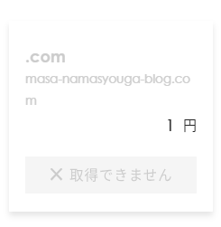
<p style="font-size: 0.8rem; color: #888; margin-top: 10px;">▲ 空きがないとこうなるようだ。</p>
</div>
<p>この通りmasa-namasyouga-blogで検索してみた。<br>すでに自分が取得しているので取得できない。</p>
<div style="text-align: center; margin: 30px 0;">
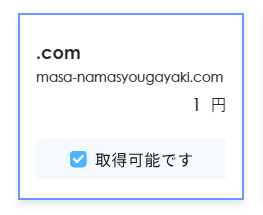
<p style="font-size: 0.8rem; color: #888; margin-top: 10px;">▲ 取得可能なドメインであればこう出る。</p>
</div>
<p>取得可能なドメインであればこう出る。Xserver Domainでは取得費用は1円だ。<br>しかし2個目以降は770円だ。</p>
<div style="text-align: center; margin: 30px 0;">
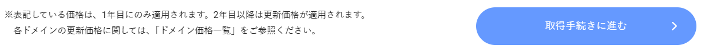
<p style="font-size: 0.8rem; color: #888; margin-top: 10px;">▲ 注意事項としてドメインは基本1年ごとの更新が必要だ。</p>
</div>
<p>ドメインは"取得費用"が1円なだけであり、更新にはお金が必要だ。<br>1年ごとに更新が必要で、.comの場合年間1,721円の更新費用が掛かるみたいだ。<br>.netや.blogなどになると更新費用が変わるので要注意だ。</p>
<div style="text-align: center; margin: 30px 0;">

<p style="font-size: 0.8rem; color: #888; margin-top: 10px;">▲ しかしXserverでサーバーも契約してしまえばドメインは永久無料だ。</p>
</div>
<p>サーバーもXserverで契約してしまえば更新費用は永久無料になる。<br>しかしXserverさんには悪いが、無料サーバーで公開してしまった方がコスト的には安い。<br>なんせ有料サーバーはXserverに限らず高い。<br> <br>さっそくドメインを取得していこう。<br>ブログを書く用にもう一個ドメインを取ろう。だがすぐ解約する。<br>今回は費用の都合上.comではなく.netとなっている。<br>金の都合なので気にしなくていい。</p>
<div style="text-align: center; margin: 30px 0;">
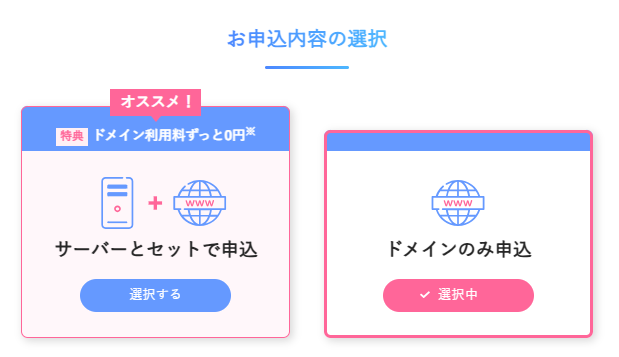
<p style="font-size: 0.8rem; color: #888; margin-top: 10px;">▲ 今回はドメインのみの申し込みだ。</p>
</div>
<p>どっちか選ぼう。<br>めんどくささで言うとサーバーをこっちで契約した方がいいのかもしれない。<br>今回はブログの為だけにとるのでドメインだけで申し込もう。</p>
<div style="text-align: center; margin: 30px 0;">
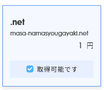
<p style="font-size: 0.8rem; color: #888; margin-top: 10px;">▲ 取得可能ですのチェックボックスにチェックを入れて選択しよう。</p>
</div>


<div style="text-align: center; margin: 30px 0;">

<p style="font-size: 0.8rem; color: #888; margin-top: 10px;">▲ 青いボタンを押して取得手続きにいこう。</p>
</div>
<p>チェックボックスのチェックを入れたら下の青いボタンを押して取得手続きに進もう。</p>
<div style="text-align: center; margin: 30px 0;">
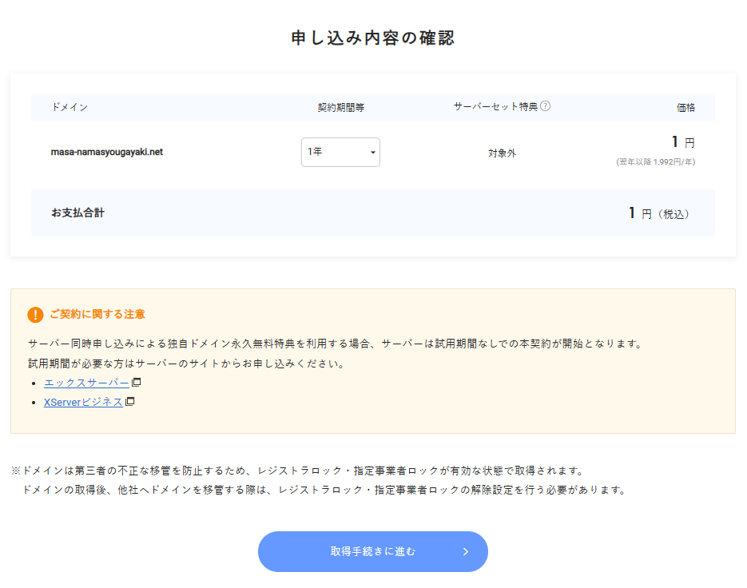
<p style="font-size: 0.8rem; color: #888; margin-top: 10px;">▲ もう一度聞かれる。確認して取得手続きに行こう。</p>
</div>
<p>もう一度確認されるので確認してから取得手続きに行こう。</p>
<div style="text-align: center; margin: 30px 0;">
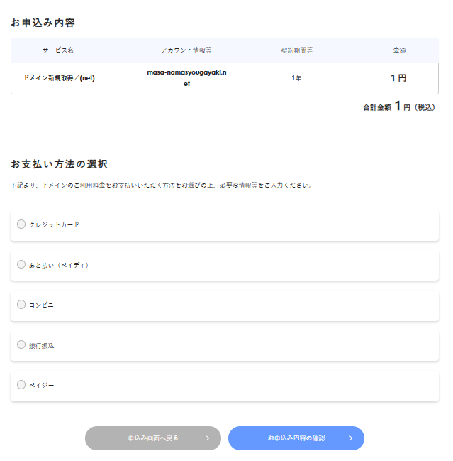
<p style="font-size: 0.8rem; color: #888; margin-top: 10px;">▲ 支払い方法を聞かれる。自分の好きな支払方法を選択しよう。</p>
</div>
<p>次は支払いだ。支払い方法は割と何でもある。<br>クレカ ペイディ コンビニ振込 銀行振込 ペイジーの中から選べる。<br>自分に合ってると思う支払い方法で支払おう。
</p><div style="text-align: center; margin: 30px 0;">
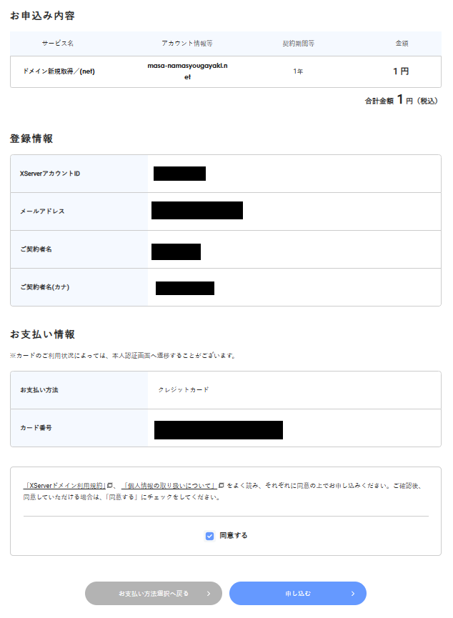
<p style="font-size: 0.8rem; color: #888; margin-top: 10px;">▲ 支払ったらこの画面に進む。</p>
</div>
<p>支払うとこの画面に進むことができる。<br>利用規約などをしっかり読み込んでから同意しよう。<br>Xserverではないが意味不明な事が書いてある場合がある。<br>ちなみに今の自分みたいに結局解約するのに何回も契約したりするのはやめた方がいいだろう。<br>明記はされていないがアウトになる可能性も0ではない。<br>入金が完了すると申し込みが完了する。</p>
<div style="text-align: center; margin: 30px 0;">
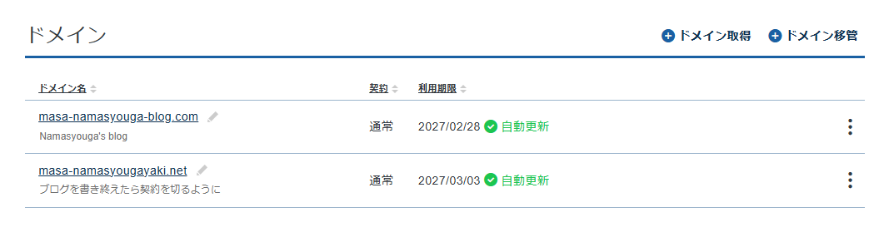
<p style="font-size: 0.8rem; color: #888; margin-top: 10px;">▲ 手続きが終わったら管理画面に行こう。</p>
</div>
<p>手続きが終わったら管理画面に行こう。でていればOK
</p><h2>HTML・CSS・JavaScriptを書く</h2>
<p>次にHTMLとCSSを書こう。<br>必要であればJavaScriptも書こう。<br>と言っても独学で書いていくのはめんどくさい。<br>そこで自分はAIを利用している。Geminiがおすすめだ。<br>やることは簡単。AIに指示を打ち込んで自分好みのサイトに仕上げるだけだ。</p>
<h2>DNSレコード設定</h2>
<p>次はDNSレコードの設定をしよう。<br>今回は後述の理由でGithub向けの設定にする。<br>Github以外の場合はほかの記事を見よう。</p>
<div style="text-align: center; margin: 30px 0;">
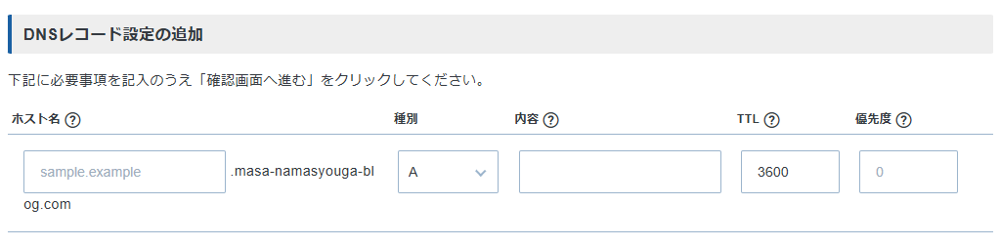
<p style="font-size: 0.8rem; color: #888; margin-top: 10px;">▲ DNSレコード設定を開こう。</p>
</div>
<p>DNSレコード設定をしよう。<br>これをしないとGihubを使った方法で公開しても見ることができない。<br>種別はA<br>内容のところには<br>185.199.108.153<br>185.199.109.153<br>185.199.110.153<br>185.199.111.153<br>と入力してやろう。<br>TTLと優先度はそのままでいい。なんならいじらない方がいい。</p>
<div style="text-align: center; margin: 30px 0;">
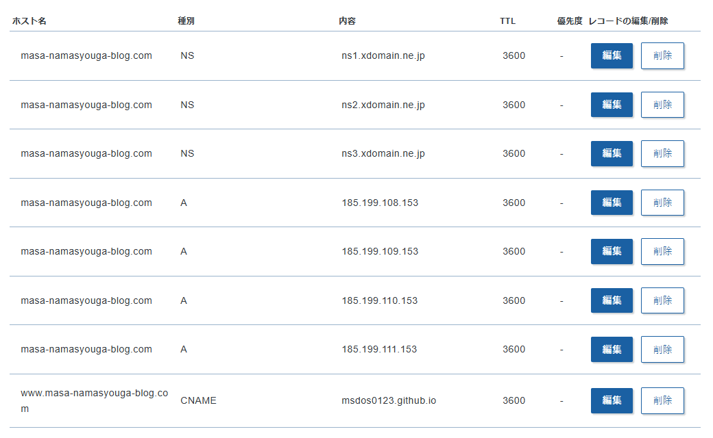
<p style="font-size: 0.8rem; color: #888; margin-top: 10px;">▲ 設定が終わったらこうなるはずだ。</p>
</div>
<p>
</p><h2>サーバー設定</h2>
<p>次にサーバー(?)の設定をしよう。<br>無料で使えるものはたくさんあると思うが、自分はGithubを使っている。<br>なぜGithubかと思ったかもしれないが、Githubはサーバーみたいに使える。<br>まずはGithubのアカウントが必要なので作っておこう。<br>Githubはアカウント作っていて損がないからな。</p>
<div style="text-align: center; margin: 30px 0;">
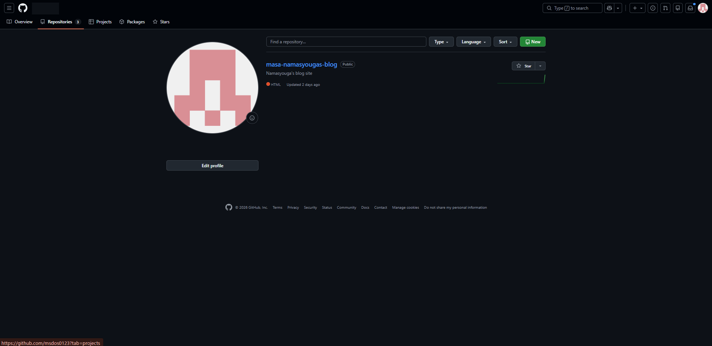
<p style="font-size: 0.8rem; color: #888; margin-top: 10px;">▲ アカウントを作ったらRepositoriesページに行こう。</p>
</div>
<p>アカウントを作り終えたら自分のマイページに行きRepositoriesを押そう。<br>そしたら緑のNewと書かれたボタンを押そう。</p>
<div style="text-align: center; margin: 30px 0;">
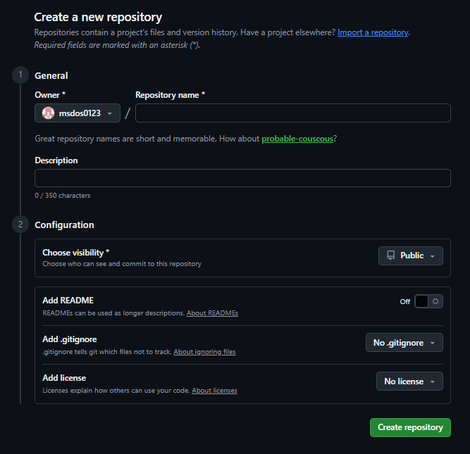
<p style="font-size: 0.8rem; color: #888; margin-top: 10px;">▲ Repository nameだけ決めよう。</p>
</div>
<p>次はRepository nameだけ決めよう。<br>あとはそのまま(Repository name以外画像の通り)でいい。</p>
<h2>ファイルアップロード</h2>
<div style="text-align: center; margin: 30px 0;">
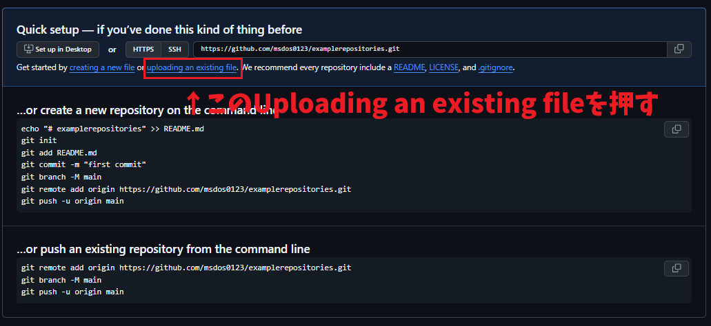
<p style="font-size: 0.8rem; color: #888; margin-top: 10px;"></p>
</div>
<p>Create Repositoryを押したらこの画面になる。<br>そしたらUploading an existing fileを押そう。</p>
<div style="text-align: center; margin: 30px 0;">

<p style="font-size: 0.8rem; color: #888; margin-top: 10px;">▲ 赤枠の文字をクリックしたらこの画面が出る。</p>
</div>
<p>Uploading an existing fileを押したらこの画面になる。<br>ファイルマークがあるところにAIなどで作ったhtmlをアップロードしよう。<br>別記事のhtmlが入ったファイルやCSSファイル、画像ファイルなどを分けて作っているなら一緒にアップロードしよう。<br>ファイルをドラッグアンドドロップするだけだ。<br>ファイルをドラッグアンドドロップしたらCommit and changesを押そう。</p>
<div style="text-align: center; margin: 30px 0;">
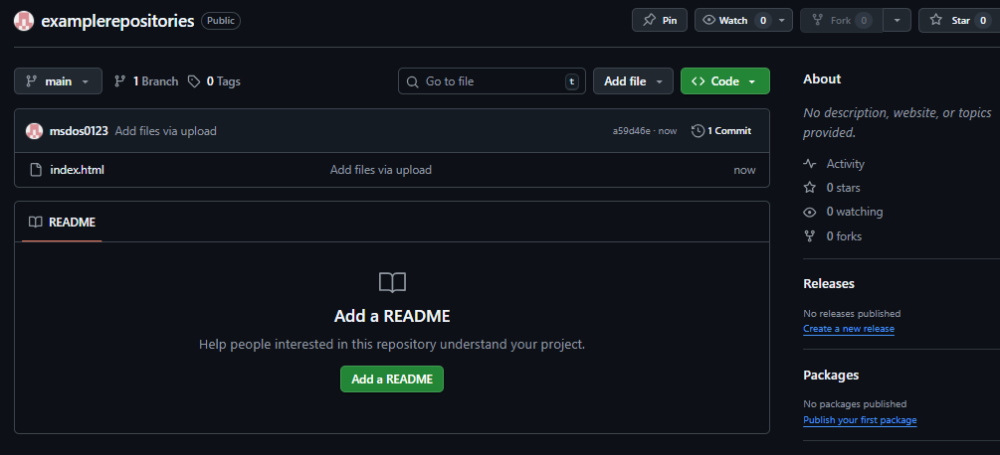
<p style="font-size: 0.8rem; color: #888; margin-top: 10px;">▲ アップロードしてCommitすればこうなる。</p>
</div>
<p>アップロードが完了してコミットすればこの画面になる。<br>そしたら上の歯車マークのSettingを押そう。</p>
<h2>セッティング</h2>
<div style="text-align: center; margin: 30px 0;">
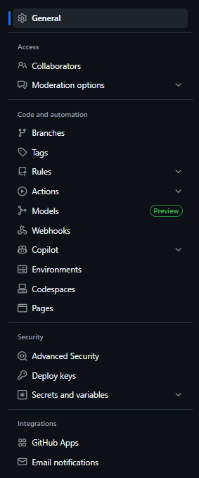
<p style="font-size: 0.8rem; color: #888; margin-top: 10px;">▲ Settingを押すとSettingが出てくる。小泉構文みたいだなこれ。</p>
</div>
<p>Settingが出てきたらタブのところにあるPagesをクリックしよう。</p>
<div style="text-align: center; margin: 30px 0;">
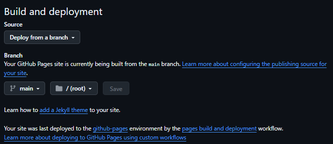
<p style="font-size: 0.8rem; color: #888; margin-top: 10px;">▲ Pages。</p>
</div>
<p>Pagesを押すとBuild and deploymentが出てくる。<br>画像の通りセッティングしよう。</p>
<h2>カスタムドメイン設定</h2>
<div style="text-align: center; margin: 30px 0;">
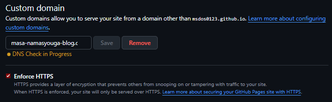
<p style="font-size: 0.8rem; color: #888; margin-top: 10px;">▲ カスタムドメイン。</p>
</div>
<p>次はカスタムドメイン設定だ。<br>ここで先程取得したカスタムドメインを入力しよう。<br>そしてsaveを押してカスタムドメインを保存しよう。<br>saveするとDNSチェックが始まる。<br>しかしDNS check successfulになるには最大24時間程度かかる。<br>自分の場合は22時間程度かかった。</p>
<div style="text-align: center; margin: 30px 0;">
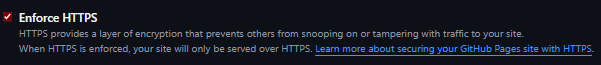
<p style="font-size: 0.8rem; color: #888; margin-top: 10px;">▲ DNSチェックが終わるとhttps化できる。</p>
</div>
<p>DNSのチェックが終わったらEnforce HTTPSのチェックボックスを押してhttpsを有効化しよう。</p>
<h2>アドレスバーにリンクを入力</h2>
<p>これらの設定が終わったらchromeやedgeのアドレスバーに取得したドメイン(≒リンク)を入力してあげよう。<br>これで開くことができれば完了だ。</p>
<h2>まとめ</h2>
<p>数日にわたって書いているから変な文章になっているかもしれない。<br>手順をまとめると<br>ドメイン取得→AIにHTMLなどを書かせる→DNSの設定をする→Github系の設定<br>超短的に言えばこうだ。<br>どうだ?AIを使えばサルでもできそうだ。<br>自分でドメインを取ってブログを書いたりしたい人は是非ともやってみてくれ。</p>

            
        </p></li></section>


    </article>
           <footer>
            <a href="../index.html" class="back-to-top">← Go back to Archive</a>
            <p style="margin-top: 40px; font-size: 0.8rem; color: #888;">
                Copyright © 2026 生しょうが's blog
            </p>
            </footer>
</main>


